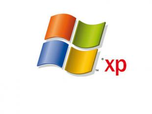

УСТАНАВЛИВАЯ, КОПИРУЯ ИЛИ ИНЫМ ОБРАЗОМ
ИСПОЛЬЗУЯ ПРОДУКТ, ВЫ ТЕМ САМЫМ СОГЛАШАЕТЕСЬ
С ПОЛОЖЕНИЯМИ И УСЛОВИЯМИ НАСТОЯЩЕГО
ЛИЦЕНЗИОННОГО СОГЛАШЕНИЯ. ЕСЛИ ВЫ НЕ
СОГЛАСНЫ С ПОЛОЖЕНИЯМИ И УСЛОВИЯМИ
НАСТОЯЩЕГО ЛИЦЕНЗИОННОГО СОГЛАШЕНИЯ, НЕ
УСТАНАВЛИВАЙТЕ И НЕ ИСПОЛЬЗУЙТЕ ДАННЫЙ
ПРОДУКТ; ВЫ МОЖЕТЕ ВЕРНУТЬ ЕГО ЛИЦУ, У
КОТОРОГО ВЫ ПРИОБРЕЛИ ПРОДУКТ, И ПОЛУЧИТЬ
ОБРАТНО УПЛАЧЕННЫЕ ВАМИ ДЕНЬГИ.
-
ОБЪЕМ ЛИЦЕНЗИИ.
Корпорация Майкрософт предоставляет вам следующие
права при условии соблюдения вами всех положений и
условий настоящего лицензионного соглашения:
* Установка и использование.
Разрешается устанавливать, использовать,
осуществлять доступ, отображать и запускать одну
копию продукта на одном компьютере, в качестве
которого может выступать рабочая станция, терминал
или любое другое устройство (далее "рабочая
станция"). Продукт нельзя использовать
одновременно более чем 2 (двумя) процессорами
одной рабочей станции. К рабочей станции
разрешается подключать не более 10 (десяти)
компьютеров или других электронных устройств
(далее "устройство") для использования служб
данного продукта, причем исключительно для доступа
к файловым службам, службам печати, службам IIS, а
также к службам удаленного доступа (включая общий
доступ к подключению и телефонные службы).
Максимальное количество подключений, равное
десяти, включает любые косвенные подключения,
производимые через "мультиплексирующее" или иное
программное или аппаратное обеспечение,
позволяющее осуществлять коллективный доступ или
поочередные подключения. Если иное явно не
оговорено ниже в разделе о программе NetMeeting,
удаленном помощнике и удаленном рабочем столе,
запрещается предоставлять с помощью продукта
другому устройству возможность использовать,
осуществлять доступ, запускать или отображать
другие программы, находящиеся на рабочей станции,
а также использовать, осуществлять доступ,
запускать или отображать продукт или
пользовательский интерфейс продукта на каком-либо
устройстве, если только для этого устройства не
приобретена дополнительная лицензия на продукт.
* Обязательная активизация.
Действие лицензионных прав, предоставленных
настоящим лицензионным соглашением, ограничено
первыми 30 (тридцатью) днями с момента первой
установки продукта, если вы не предоставите
сведения, необходимые для активизации вашей
лицензионной копии продукта согласно описанию во
время установки продукта. Активизация продукта
может быть выполнена через Интернет или по
телефону (телефонные переговоры оплачиваются
вами). В случае изменения аппаратного обеспечения
компьютера или продукта может потребоваться
повторная активизация продукта. В продукт встроены
технические средства, предотвращающие незаконное
или нелицензионное использование продукта. Вы
соглашаетесь с тем, что такие средства могут
использоваться нами.
* Хранение и использование в сети.
Вы вправе также хранить или установить копию
продукта на устройстве хранения данных (например,
на сервере сети), используемом исключительно для
установки и запуска продукта на других ваших
рабочих станциях в пределах локальной сети, при
условии приобретения и выделения отдельной
лицензии на каждую рабочую станцию, на которой или
с которой продукт устанавливается, используется,
предоставляется для доступа, отображается или
запускается. Лицензия на продукт неделима и не
допускает одновременного ее использования на
нескольких рабочих станциях.
* Сохранение прав.
Все права, которые не предоставлены явно настоящим
лицензионным соглашением, сохраняются за
корпорацией Майкрософт.
-

ОБНОВЛЕНИЯ.
Если программный продукт является обновлением, для
его использования вам необходимо иметь
соответствующую лицензию на продукт, указанный
корпорацией Майкрософт как подпадающий под
предложение об обновлении После обновления
запрещается использовать продукт, являющийся
основанием вашего права на обновление.
-
ДОПОЛНИТЕЛЬНОЕ ПРОГРАММНОЕ ОБЕСПЕЧЕНИЕ И
СЛУЖБЫ.
Настоящее лицензионное соглашение распространяется
также на предназначенные для продукта обновления,
добавления, дополнительные компоненты и компоненты
служб в Интернете, которые могут быть доступны или
предоставлены вам корпорацией Майкрософт после
приобретения вами исходной копии продукта, если
такое обновление, добавление, дополнительный
компонент или компонент служб в Интернете не
сопровождается иными условиями, установленными
корпорацией Майкрософт. Корпорация Майкрософт
оставляет за собой право прекратить работу любой
службы в Интернете, предоставленной или доступной
вам посредством использования продукта. Настоящее
лицензионное соглашение не предоставляет вам
никаких прав на использование включенных в продукт
компонентов пакета средств разработки Windows
Media Format Software Development Kit (далее
"WMFSDK") для разработки приложений, использующих
технологию Windows Media. Для использования
средств WMFSDK с целью разработки таких приложений
необходимо посетить веб-страницу
http://msdn.microsoft.com/workshop/imedia/
windowsmedia/sdk/wmsdk.asp, принять условия
отдельного лицензионного соглашения на
использование пакета WMFSDK, загрузить
соответствующий пакет WMFSDK и установить его на
своем компьютере.